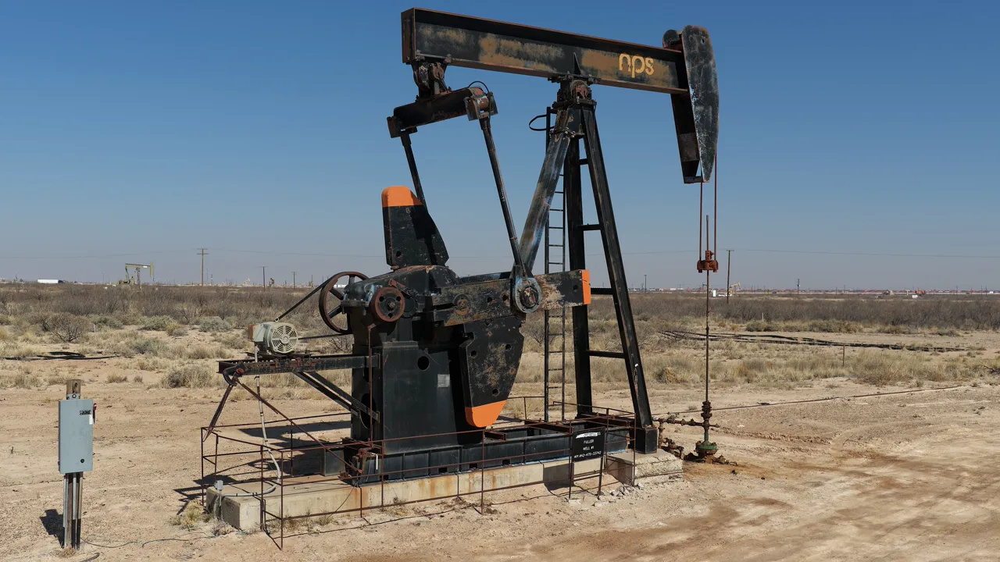

바탈리온 오일을 볼 때 주주들이 가장 궁금해할 질문은 “유가가 오르면 주가도 같이 갈까요”가 아닙니다. 더 중요한 질문은 회사가 지금의 부채와 자본 구조를 버티면서 퍼미안 분지 생산량을 얼마나 오래 유지할 수 있느냐입니다. 바탈리온 오일은 대형 석유회사처럼 여러 지역과 사업부로 위험을 나누는 회사가 아니라, 델라웨어 분지 자산과 금융 구조의 변화가 곧 회사 전체의 체력으로 이어지는 작은 E&P입니다.
이런 회사는 원유 가격 하나로 설명하면 자주 빗나갑니다. 유가가 좋아도 헤지 손실, 이자 비용, 우선주와 워런트, 자산 매각 후 남은 개발 재고가 함께 작동합니다. 반대로 유가가 완벽하지 않아도 처리 시설이 안정되고 단위 비용이 내려가면 살아날 여지가 생깁니다. 그래서 BATL의 핵심은 “석유 테마”가 아니라 “부채가 큰 소형 생산회사가 생산과 원가를 동시에 맞출 수 있느냐”에 가깝습니다.
2026년 1분기 숫자는 이 복잡함을 잘 보여줍니다. 평균 순생산량은 하루 12,578 Boe로 전년 동기보다 늘었지만, 총 영업수익은 3,920만달러로 줄었습니다. 생산은 늘었는데 매출이 줄었다면 단순히 시추가 잘됐다는 문장으로 끝낼 수 없습니다. 가격, 유종 구성, 헤지, 처리 비용, 자산 매각과 신규 자본조달을 한꺼번에 봐야 합니다.
생산은 늘었지만 매출은 줄었습니다

바탈리온 오일의 2026년 1분기 평균 순생산량은 하루 12,578 Boe였고, 그중 원유 비중은 47%였습니다. 전년 동기에는 하루 11,900 Boe, 원유 비중 53%였습니다. 겉으로 보면 생산량은 좋아졌습니다. 회사도 더 안정적인 처리 흐름과 생산 증가를 강조했습니다. 하지만 매출은 전년 동기 4,750만달러에서 3,920만달러로 줄었습니다.
이 차이는 투자자가 가장 먼저 봐야 할 지점입니다. 회사는 헤지 영향을 제외한 평균 실현가격이 Boe당 9.73달러 낮아졌다고 설명했습니다. 또한 1분기에는 약 100만달러의 실현 헤지 손실이 있었습니다. 생산량이 늘어도 가격과 헤지가 이익을 누르면 주주는 체감하기 어렵습니다. BATL은 생산 증가율을 보는 종목이라기보다 “증가한 생산량이 실제 현금으로 얼마나 남느냐”를 따져야 하는 종목입니다.
원유 비중도 중요합니다. 원유는 천연가스와 NGL보다 대체로 실현가격이 높게 잡히는 경우가 많습니다. 그런데 1분기 원유 비중은 전년 동기보다 낮았습니다. 생산량이 늘었는데 제품 구성의 질이 약해지고 가격이 내려가면 매출과 이익은 쉽게 눌립니다. 이 회사의 분기 자료를 읽을 때는 하루 생산량만 보지 말고 원유 비중, 실현가격, 헤지 손익을 같은 표 안에서 같이 봐야 합니다.
부채 상환은 자산 매각과 희석을 같이 봐야 합니다
관련 영상
바탈리온 오일 BATL 기업 분석을 다룬 한국어 롱폼 영상
BATL에서 부채는 배경이 아니라 본문입니다. 회사는 2026년 2월 West Quito Draw 자산을 약 6,010만달러 순수익으로 매각했습니다. 이 자산은 2025년 말 proved reserves의 약 10%에 해당하는 600만 Boe 규모로 설명되었습니다. 매각은 현금 유입과 부채 부담 완화에는 도움이 되지만, 동시에 향후 생산 기반 일부를 내주는 결정입니다. 따라서 매각 자체를 무조건 좋다거나 나쁘다고 볼 수 없습니다.
3월에는 1,500만달러 규모의 사모 보통주와 prefunded warrant 발행도 있었습니다. 회사는 운전자본과 일반 기업 목적에 사용한다고 밝혔고, 이후 워런트 행사로 추가 주식이 발행되었습니다. 같은 달에는 Ward County의 인접 acreage를 주식으로 취득했습니다. 이 흐름은 회사가 현금과 자산, 주식 발행을 모두 사용해 구조를 다시 짜고 있다는 뜻입니다.
소형 에너지 기업에서 이런 변화는 주가에 매우 민감합니다. 자산 매각으로 부채를 줄이면 생존 확률은 올라가지만, 남은 자산이 충분한 생산과 개발 기회를 제공해야 합니다. 주식 발행으로 유동성을 확보하면 단기 압박은 낮아지지만, 기존 주주의 몫은 얇아질 수 있습니다. 결국 BATL 주주는 “부채가 줄었는가”만 묻지 말고 “부채 감소의 대가가 생산 기반 축소와 희석으로 얼마나 지불되었는가”를 봐야 합니다.
작은 E&P의 핵심은 원가와 처리 안정성입니다
바탈리온 오일의 좋은 신호도 있습니다. 2026년 1분기 lease operating and workover expense는 Boe당 9.82달러로 전년 동기 11.01달러보다 낮아졌습니다. gathering and other expense도 Boe당 9.94달러로 전년 동기 11.20달러보다 내려갔습니다. 회사는 장기 처리 계약과 더 안정적인 처리 흐름이 비용 개선에 기여했다고 설명했습니다. 소형 E&P에서 이런 단위 비용 하락은 매우 중요합니다.
특히 sour gas 처리와 gathering 비용은 BATL의 민감한 변수입니다. 생산량이 늘어도 처리 시설 병목이나 비용이 높으면 현금흐름이 남기 어렵습니다. 회사가 2025년에 중앙 생산시설과 AGI Facility 처리량 개선을 언급했던 것도 이 때문입니다. 같은 유정을 보유하더라도 처리 안정성이 달라지면 실제 마진은 완전히 달라질 수 있습니다.
다만 원가가 내려가는 흐름이 한 분기 이벤트인지, 구조적 변화인지는 아직 더 확인해야 합니다. 자산 매각 뒤 생산 믹스가 바뀌고, 새로 취득한 acreage가 기존 Monument Draw와 얼마나 효율적으로 연결되는지도 봐야 합니다. 비용 개선이 계속되려면 생산량, 처리량, 유정 유지비, gathering 계약이 같은 방향으로 움직여야 합니다.
투자자는 숫자 네 개만 계속 확인하면 됩니다
BATL을 계속 추적한다면 첫 번째 숫자는 하루 평균 순생산량과 원유 비중입니다. 생산량이 늘어도 원유 비중이 낮아지고 실현가격이 눌리면 주주에게 남는 돈은 기대보다 작을 수 있습니다. 두 번째 숫자는 Boe당 lease operating and workover expense와 gathering expense입니다. 이 두 비용이 다시 올라가면 1분기 개선 신호의 설득력은 약해집니다.
세 번째 숫자는 순부채와 이자 비용입니다. 2026년 1분기 interest expense and other는 550만달러 수준이었습니다. 조정 EBITDA가 1,000만달러였다는 점을 함께 놓고 보면, 이자 부담은 아직 작지 않습니다. 회사가 현금흐름으로 원리금을 감당하는지, 자산 매각이나 주식 발행에 계속 기대야 하는지 확인해야 합니다.
네 번째 숫자는 주식 수와 잠재 희석입니다. 3월 사모 발행과 워런트 행사, 주식 기반 자산 취득은 모두 주주 지분율을 바꿀 수 있는 사건입니다. 이 회사가 생존력을 높이는 과정에서 주주의 몫이 얼마나 보존되는지가 관건입니다. 에너지 가격이 좋아지는 장면에서는 작은 E&P가 빠르게 움직일 수 있지만, 그 속도가 주주 가치로 남으려면 부채, 비용, 희석이 동시에 관리되어야 합니다.
결론적으로 바탈리온 오일은 “유가 상승 베팅”보다 더 좁고 까다로운 종목입니다. 퍼미안 분지 자산은 분명 매력적인 지역에 있지만, 회사의 현재 과제는 매장량보다 자본 구조입니다. 다음 분기부터는 생산량이 아니라 생산량의 질, 처리 비용, 순부채 감소, 주식 수 변화가 같은 방향으로 좋아지는지를 먼저 확인하는 편이 안전합니다. BATL 주가가 오래 설득력을 얻으려면 원유 가격보다 먼저 회사 자체의 체력이 숫자로 증명되어야 합니다.